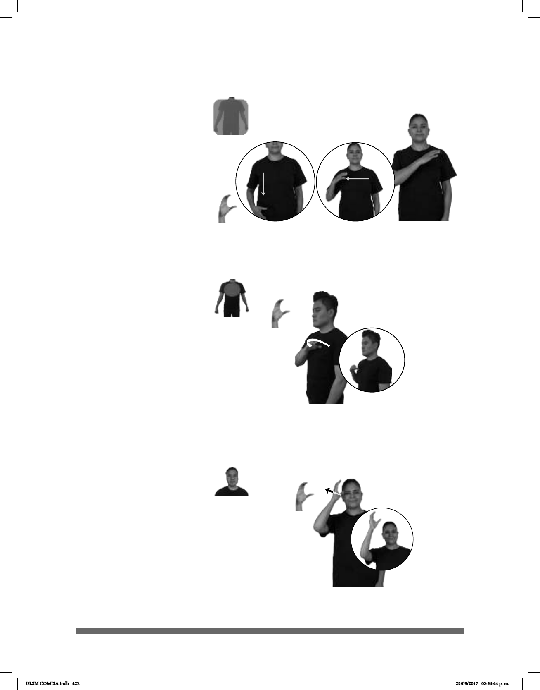

422
Seña: SM
C.1
La palma inicia
oblicua hacia la izquierda y hacia
abajo y termina hacia adentro.
Sobre los hombros y se
desliza hacia la cadera del lado
izquierdo al lado derecho.
La mano se mueve
formando el número siete.
sust. y adj. Que
profesa la religión fundada en las
enseñanzas y en la vida de
Jesucristo.
La seña se usa en la
comunidad sorda Amistad
Cristiana.
Seña: SM
C.1
Palma oblicua hacia
la derecha y hacia adentro.
Sobre el hombro
izquierdo y se desliza hacia el
hombro derecho.
Recto.
sust. y adj. Que
profesa la religión fundada en las
enseñanzas y en la vida de
Jesucristo.
La seña se usa las
comunidades sordas Amistad
Cristiana e Iglesia de Cristo.
(C-79)
CRISTIANA pro-YO CREER FE
Yo creo en la fe cristiana.
(C-80)
CRISTIANA pro-YO CREER FE
Yo creo en la fe cristiana.
Seña: SM
C.1
Palma hacia la
izquierda.
Inicia sobre la sien y
termina a la altura de la cabeza.
Recto hacia el frente.
sust. m. En la
teología cristiana el Hijo de Dios
hecho hombre.
(C-81)
PIEDRA-PERFIL CL: 2
de pie
CL: B
con los brazos abiertos
CRISTO dm-REDENTOR BRASIL
allá
La estatua de Cristo Redentor está en Brasil.
DLSM COMISA.indb 422 25/09/2017 02:54:44 p. m.